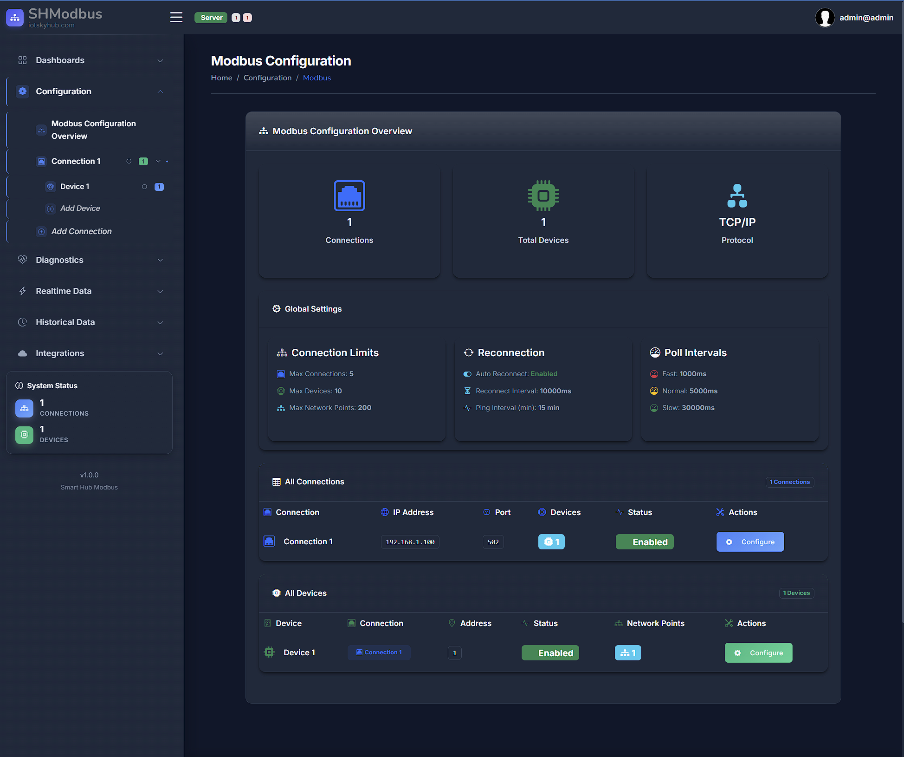

SHModbus User Guide ¶

Overview ¶
SHModbus is a web-based application for real-time monitoring and visualization of Modbus TCP/IP devices. It presents live sensor values, equipment status, and system information through an intuitive, responsive interface.
Key features ¶
Real-time data monitoring ¶
- Live Data Table with automatic refresh every few seconds (no manual reload).
- Clear timestamp for the last update of each value.
- Consistent numeric formatting (two decimal places).
Data visualization ¶
- Interactive charts for trends over time.
- Multiple chart types, including line and bar.
- Access to historical data.
- Zoom and pan to focus on specific periods.
Device management ¶
- Real-time connection status indicators.
- Device details for connected equipment and sensors.
- Support for multiple devices monitored concurrently.
- Online/offline health indicators.
User interface ¶
- Responsive layout for desktop, tablet, and mobile.
- Light and dark themes.
- Sortable tables by any column.
- Search and filtering for fast navigation.
- Data export for external analysis.
Real-time communication ¶
- SignalR-based updates without page reloads.
- Live notifications on device status changes.
- Automatic reconnection on intermittent networks.
- Low latency between device updates and display.
Data management ¶
- Cached recent values for quick access.
- Historical readings and trend views.
- Automatic validation and handling of invalid data.
- Local time zone presentation for timestamps.
Industrial applications ¶
- Process monitoring: temperature, pressure, flow, and other variables.
- Equipment status: motor speed, valve position, pump state.
- Alarm monitoring: real-time alerts for out-of-range conditions.
- Quality control: production metrics and quality parameters.
- Energy management: power consumption and efficiency metrics.
Accessibility :material-accessibility:¶
- Full keyboard navigation.
- Screen reader compatibility.
- High-contrast option for improved visibility.
- Scalable interface with adjustable text and element sizes.
Performance ¶
- Efficient, differential updates—only changed data is refreshed.
- Optimized bandwidth usage for continuous monitoring.
- Compatible with modern web browsers.
- Fast load times and responsive interactions.
Configuration ¶
- Customizable views to match your workflow.
- User preferences for saved layouts and settings.
- Select which data points (sensors/values) to monitor.
- Adjustable data refresh intervals.
Security ¶
- Encrypted communication between clients, servers, and devices.
- User authentication and access control.
- Data integrity checks to ensure accuracy.
- Audit logging of user actions and system events.
Common use cases ¶
- Manufacturing: production line monitoring and quality metrics.
- HVAC: temperature, humidity, and air quality tracking.
- Water treatment: flow rates, chemical levels, and pump status.
- Energy systems: generation, consumption, and efficiency.
- Building automation: lighting, security, and environmental systems.
- Laboratory equipment: test conditions and measurement results.
Quick start ¶
See the Getting Started guide for detailed setup instructions.
Basic steps: 1. Open the application in a supported web browser. 2. Wait for the connection to be established with Modbus devices. 3. View real-time data in the Live Table. 4. Explore charts and visualizations for trends. 5. Customize the view by sorting and filtering. 6. Configure alerts and monitoring for critical parameters.
SHModbus manages Modbus communication, data formatting, and real-time delivery so you can focus on monitoring your processes and equipment.